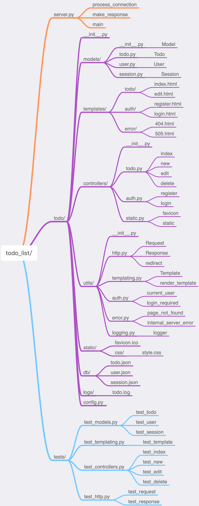

项目总结
本教程带大家一起实现了一个 Todo List 程序，包含基础的增删改查功能，和用户登录认证。这也是 Web 开发中最常见的需求。
我画了一张思维导图，帮助你从宏观的角度来概览 Todo List 程序，加深你对 Web 开发的理解。

Todo List
项目整体思路参考 MVC 设计模式。有意设计 utils/ 目录专门用来存储一些工具方法，这些工具方法通常比较独立，尽量不从外部模块导入依赖，其他模块需要某个工具方法时从 utils/ 目录下导入即可使用，这样就避免了循环导入的问题。
诚然，Todo List 程序还有很多待完善的地方，它不符合 Python 界的 WSGI 规范，也没有考虑 Web 安全防范、性能等方面的问题，项目可能看起来比较 Low。但这足以说明 Web 开发的本质，无论多么复杂的 Web 程序，都离不开这些底层原理。
结束 or 开始
九篇文章，带你撸了一个 Web 服务器，希望让读者能够通过这个微小的 Web 程序原型明白 Web 服务器的工作原理。只有明白基本原理，再去学习一些概念、框架才会得心应手。
教程到这里就结束了，但对于 Web 开发才刚刚开始，Web 开发还有非常多的知识等着我们去学习探索。每一段旅程的结束都是下一段旅程的开始，愿你在学习技术的道路上不再孤独。
后记
作者编程水平有限，教程中可能有表达不够准确或错误的地方，欢迎读者能提出宝贵意见。
希望读者读完此系列文章能够有所收获。
联系我：
微信：jianghushinian